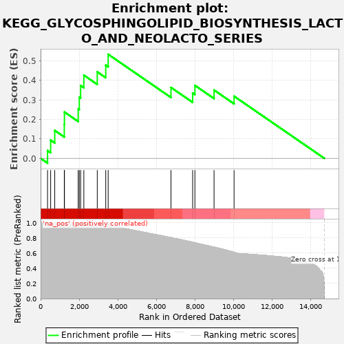
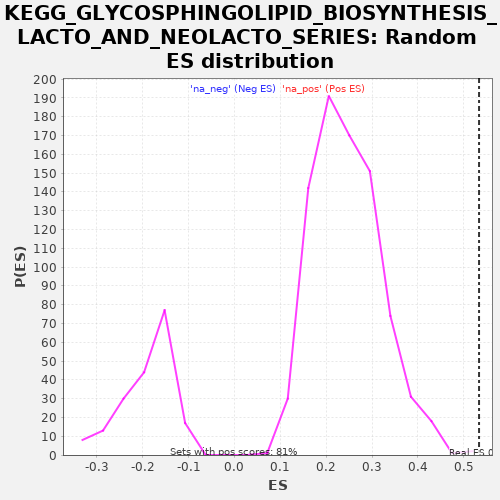

| | | Dataset | drug_embeddings_gsea |
| Phenotype | NoPhenotypeAvailable |
| Upregulated in class | na_pos |
| GeneSet | KEGG_GLYCOSPHINGOLIPID_BIOSYNTHESIS_LACTO_AND_NEOLACTO_SERIES |
| Enrichment Score (ES) | 0.53320634 |
| Normalized Enrichment Score (NES) | 2.1589692 |
| Nominal p-value | 0.0012330456 |
| FDR q-value | 0.004519128 |
| FWER p-Value | 0.024 |
Table: GSEA Results Summary

Fig 1: Enrichment plot: KEGG_GLYCOSPHINGOLIPID_BIOSYNTHESIS_LACTO_AND_NEOLACTO_SERIES
Profile of the Running ES Score & Positions of GeneSet Members on the Rank Ordered List

Fig 2: KEGG_GLYCOSPHINGOLIPID_BIOSYNTHESIS_LACTO_AND_NEOLACTO_SERIES: Random ES distribution
Gene set null distribution of ES for KEGG_GLYCOSPHINGOLIPID_BIOSYNTHESIS_LACTO_AND_NEOLACTO_SERIES